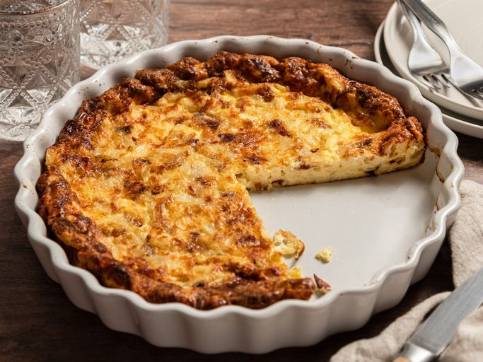

Ingredients
- 8 slices bacon
- 4 ounces shredded Swiss cheese
- 1 ½ cups milk
- 4 large eggs, beaten
- ½ cup all-purpose flour
- ¼ cup finely chopped onion
- 2 tablespoons butter, melted
- 1 teaspoon salt
Steps
- Gather all ingredients. Preheat the oven to 350 degrees F (175 degrees C). Lightly grease a 9-inch pie pan.
- Raw ingredients for quiche including bacon, cheese, and eggs.
- Allrecipes / Sonia Bozzo
- Place bacon in a large skillet and cook over medium-high heat, turning occasionally, until evenly browned, about 10 minutes.
- Strips of bacon cooking in a frying pan on stovetop.
- Allrecipes / Sonia Bozzo
- Drain bacon slices on paper towels. Crumble and set aside.
- Cooked bacon draining on paper towel next to crumbles.
- Cover bottom of prepared pie pan with shredded cheese and crumbled bacon.
- Shredded cheese and bacon layered in pie dish.
- Whisk together milk, eggs, flour, onion, butter, and salt in a large bowl until smooth. Pour mixture over cheese and bacon in pie pan.
- Unbaked quiche mixture with visible bacon and onions.
- Bake quiche in the center of the preheated oven until golden brown and firm in the center, about 35 minutes. Serve hot or cold.
Home